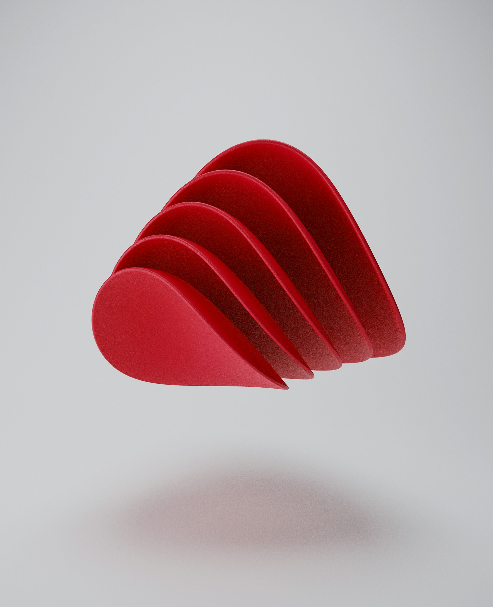
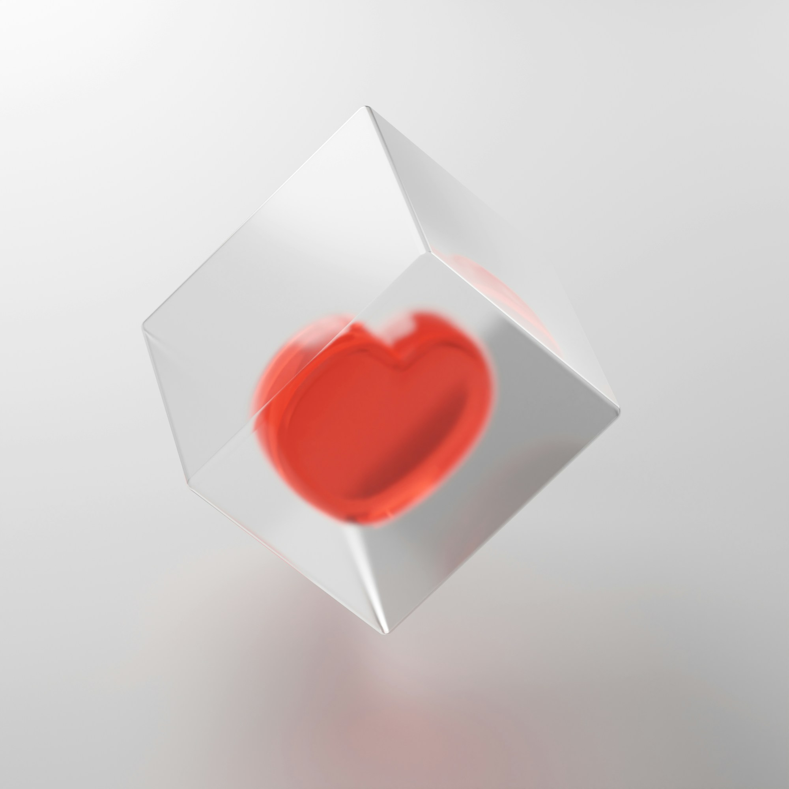

Разобрали 124 поста 19 авторов про AI-контент.

Доля зрителей, которые написали комментарий. Медиана по сентябрьским Reels.
Просмотры относительно обычного поста того же автора. 1,00 — его обычный пост.

У карусели нет звука — подпись единственное место для просьбы.
Сколько фраз из пяти слов подписи совпадает с речью в ролике. Медиана по 86 постам.